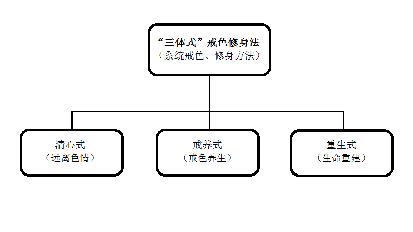
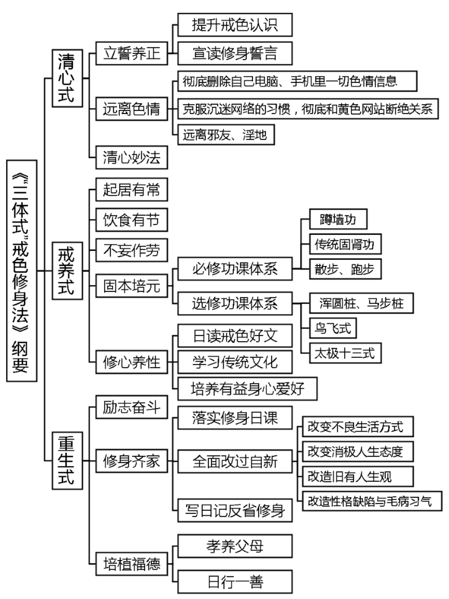
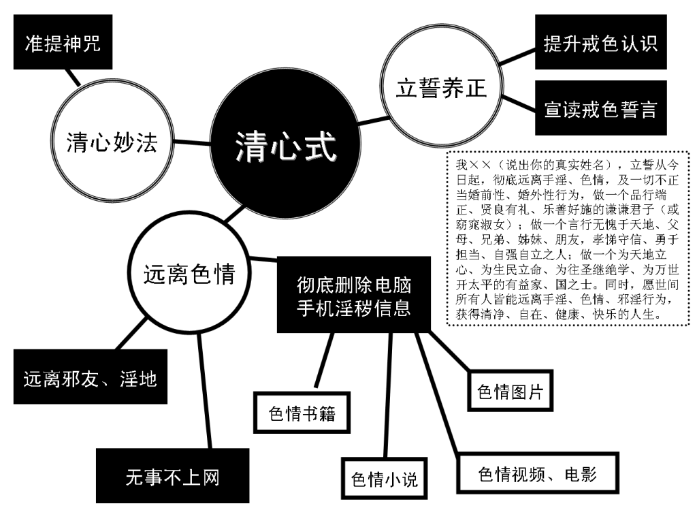
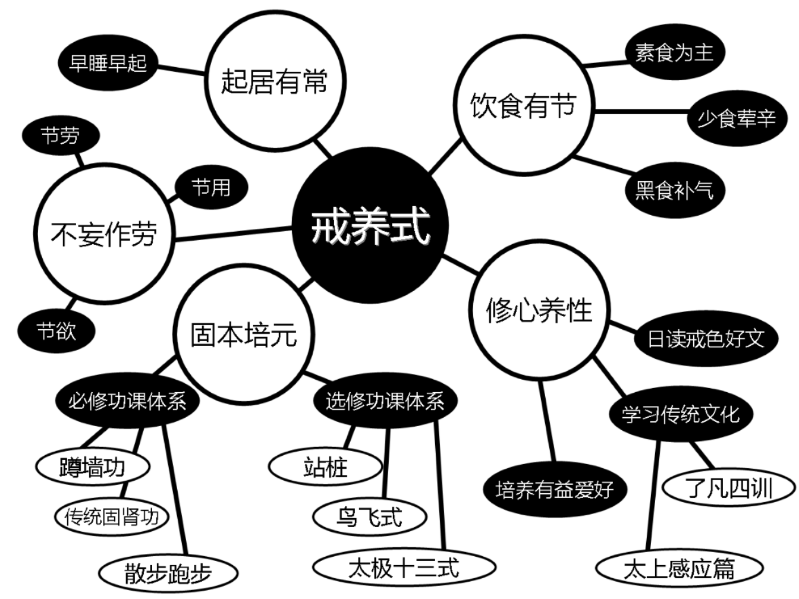
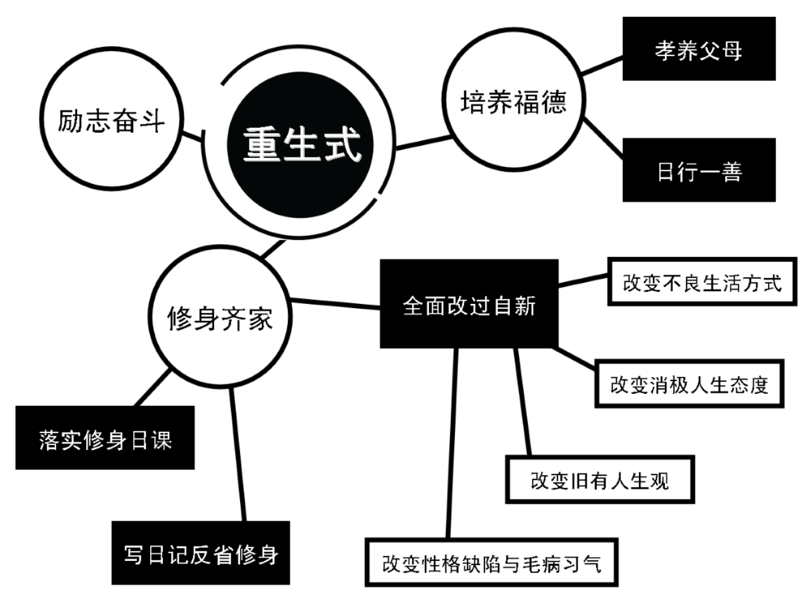

“戒色系统工程论”实战手册----“三体式”戒色修身法
导 言
要想成功戒除多年手淫恶习，必须依靠系统戒色方法才有成功可能。“‘戒色系统工程论’实战手册----‘三体式’戒色修身法”将系统戒色方法进一步体系化、简明化、量化、可操作化，内容与《“戒色系统工程论”解读——以“系统方法”成功戒手淫指南》（新版·附戒色图表）一文一脉相承，二者互相参究、实践，必能戒除手淫，获得清净自在的人生。
1、 “三体式戒色修身法”体系总揽

清心式、戒养式、重生式（远离色情、戒色养生、生命重建）是三位一体不可分割的有机整体，是系统的戒色、修身方法体系，故称“三体式戒色修身法”。“三体式戒色修身法” 以德为本，融合了儒、释、道三家的身心修养、修炼方法和传统中医身心一体、生理与心理互相影响之养生原理，以及武学、易经、阴阳五行之哲学思想，从身、心两者入手，性命双修，以达调理阴阳、平衡气血、固肾强身、正身养气、修德养性、生命重生之目的。
乙、“三体式戒色修身法”三大体系分论
一、清心式（远离色情）（3大法）
（一）立誓养正（2中法）
1、提升戒色认识
欲实践“三体式戒色修身法”戒色，先须认真阅读“系统戒色论”根本篇目《“戒色系统工程论”解读——以“系统方法”成功戒手淫指南》一文至少3--9遍以上，做摘抄笔记或打印下来，树立系统戒色的正确认识。
2、宣读修身誓言
清晨洗漱完毕，面朝东方站立，双手抱拳当胸，如古人见面礼，以诚敬心面对东方虚空宣读修身誓言一遍：
我××（说出你的真实姓名），立誓从今日起，彻底远离手淫、色情，及一切不正当婚前性、婚外性行为，做一个品行端正、贤良有礼、乐善好施的谦谦君子（或窈窕淑女）；做一个言行无愧于天地、父母、兄弟、姊妹、朋友，孝悌守信、勇于担当、自强自立之人；做一个为天地立心、为生民立命、为往圣继绝学、为万世开太平的有益家、国之士。同时，愿世间所有人皆能远离手淫、色情、邪淫行为，获得清净、自在、健康、快乐的人生。
功效：东方在《易经》学中为生生不已之吉祥方位，双拳抱胸表示恭敬与诚意，本誓言包含宇宙正阳能量，以诚敬心面对东方虚空读此誓言一遍，虽未实行，当下即可体会浩然正气发自心胸，体内阳气随之发动。若能日日宣读此誓言必能长养浩然正气、培补体内阳气。
（二）远离色情（3中法）
1、彻底删除自己电脑、手机里一切色情信息。包括色情图片、视频、电影小说等，同时毁掉家里色情碟片、书籍及身边所留存的一切与色情相关的东西。
2、克服沉迷网络的习惯，彻底和黄色网站断绝关系。戒淫先戒心，戒心先戒目。除了上网查资料，无事不上网，上网不浏览色情图片、网站。
3、远离邪友、淫地。淫邪之友及有色情活动的美容院、休闲中心、舞厅、酒家、洗浴场所等淫地，皆当远离。
功效：彻底远离一切色情诱因，避免色情信息干扰心神，确保内心清净，是成功戒手淫的第一步，也是戒色成功的重要保障。
（三）清心妙法
推荐一个可以清净心念、降服淫心欲火、有助于戒意淫的清心咒语 （准提咒）：
南无萨哆呐，三藐三菩陀，俱胝呐，达扎陀，嗡，折隶，主隶，准提，娑哈，嗡部楞。
南怀瑾先生示范的准提咒发音： http://www.tudou.com/programs/view/e6Akx5mleY4/
准提咒发音剪辑合成mp3下载： http://www.folou.com/thread-468254-1-1.html
功效：每日念诵此咒21遍或49、108遍，淫欲心会逐渐变淡变薄，有削弱淫心、降服淫念功效，同时又有培养福德好运、减少戒色障碍之奇效。此咒仅持一遍皆有不可思议效果，何况日日持诵。此咒好处参阅《方便之门——论被大家普遍忽视的戒色前辈常用“戒色利器”》。
【拈提】：“清心式”旨在长养浩然正气、培补阳气，避免色情信息勾引自心欲火升腾，造成戒色障碍，以保持内心清净、心君泰然，为生阳固肾、身体复原、成功戒色打下坚实基础。
二、戒养式（戒色养生）（5大法）
（一）起居有常
晚上不睡“耗伤阳气”，早上不起“封杀阳气”，养成早睡早起的好习惯，晚上9、10点入睡，早上5、6点起床，肾精元气就能补足。
（二）饮食有节
饮食清淡，以素食为主，多食五谷杂粮、蔬菜水果、豆制品。尽量少食或不食肉食、油腻食物、刺激性食物（如葱、蒜、韭菜）等，避免这些荤腥食品刺激淫欲心爆发。多吃芝麻、香菇、黑豆、紫菜等黑色食物和各种养生粥，补肾益气。
（三）不妄作劳
过度劳累不节制地消耗体力、精力会导致虚阳外越，耗掉人体阳气。平时连续学习、工作、娱乐40分钟后，就要休息活动10分钟，然后再继续。不可纵情声色、沉迷色欲，未婚者婚前禁欲，已婚者婚后节制房事次数。不久坐、不久视，节劳、节用、节欲，葆元毓神(保养肾精、元气，爱惜精神)，日常生活中随时注意劳逸结合“不妄作劳”，才有利于身心快速健康，符合戒色养生之道。
（四）固本培元（2中法）
1、必修功课体系（3小法）
（1）蹲墙功。一组30次，建议每天早上做1--5组，可根据自身实际选择组数。 http://www.tudou.com/programs/view/oRvZk22F5Fg/
（2）传统固肾功。(彭鑫博士演示)一组30次，建议每天早上做1--5组，可根据自身实际选择组数。注意在练习固肾功时，动作要缓慢柔和、越慢越好，一分钟6次，才能达到畅通督脉、温补肾阳、固肾强身的目的。 http://v.ku6.com/show/pmUmdGML6e-UJ4uz.html
蹲墙功与传统固肾功两大健身功法为必修功课，日日坚持有补肾强身功效。
（3）散步、跑步。每日清晨散步2—5公里或跑步2—5公里，或晚饭后缓步慢行30—60分钟。动能生阳，“百练不如一走”，清晨散步时尽力迈开双腿迈大步行走（注意不可气喘吁吁），可拉开腿后面和后内侧膀胱经和肾经，有健脾、益肾功效。跑步,若早上空气质量不好，根据自身实际，学生可安排到下午或傍晚；上班族可安排到傍晚。深夜阳气收藏，不宜太晚跑步。
2、选修功课体系（3小法）
（1）站桩： 浑圆桩：日站20—30分钟。 http://www.tudou.com/programs/view/UAd9kF_LYik/?tpa=dW5pb25faWQ9MTAyMjEzXzEwMDAwMl8wMV8wMQ(彭鑫博士演示) http://v.ku6.com/show/pnCuCSHEtIt43kO1L-wx4A...html http://v.youku.com/v_show/id_XNDQ1NjI3OTA4.html?tpa=dW5pb25faWQ9MTAyMjEzXzEwMDAwMl8wMV8wMQ 马步桩：日站10分钟（注：女子不宜站马步桩） http://www.jiese.org/bbs/thread-13044-1-1.html 浑圆桩与马步桩可任选一种修练。
（2）鸟飞式。一组36次，建议做1--3组。南怀瑾先生示范的鸟飞式，有治疗失眠、肾虚、频繁梦遗之效。 http://my.tv.sohu.com/us/63271749/27874465.shtml
（3）太极十三式。（潘科名老师示范，南怀瑾文教基金会敬制） 网址一： http://www.nanhuaijinculturefoundation.org/movie.php?lang=cn&idept=12 网址二： http://www.nanhuaijinculturefoundation.org/movieplay.php?lang=cn&pk=174 必修功课体系为每日必做功课，选修功课体系可自由选择其中一项或几项。单一功法的效果不会很明显，必修功课与选修功课结合起来，效果会大大加强。必修功课与选修功课可自由组合。
功效：蹲墙功、传统固肾功、散步、跑步、马步桩有升阳、固肾、强身功效；阳气生发后欲念随之而起易频繁梦遗，鸟飞式有化解频繁梦遗之效；浑圆桩、太极十三式为整体身心疗法。本“固本培元”功法体系包含之运动、养生诸多功法，有长养阳气、培补肾精、疏通经络气脉、平衡气血、固本培元、调动人体自身修复功能促进身体康复的功效，是非常科学、系统、完整的整体身心生命修复法，同时可培养积极的人生态度与坚强的意志，有助于彻底戒除手淫陋习。
（五）修心养性（3中法）
1、日读戒色好文
认真阅读、学习论坛推荐的置顶帖、精华帖、戒色前辈的成功经验贴。戒色初期，每天学习戒色文章1-2篇，吸取前辈成功经验，避免戒色走弯路、走错路。 视频 《色情泛滥的危害》(陈大惠） http://v.youku.com/v_show/id_XMjQ3MzkxODc2.html 视频《伤身、败德、折寿的根本原因》（彭鑫博士） http://v.youku.com/v_show/id_XNDkzMjY5NDAw.html
2、学习传统文化
《了凡四训》、《幸福人生讲座》（书、视频、mp3）为必修科目，《论语别裁》、《原本大学微言》、《寿康宝鉴》、《太上感应篇》、《俞净意公遇灶神记》等其他传统文化书籍为选修内容。
《了凡四训》（下载地址）（直接百度可搜到） 《幸福人生讲座》（下载地址）（请上论坛搜索关键字获取下载地址）
功效：传统文化上合天心，为宇宙至真至正之理。常读好文、善书，学习中国古代传统文化，旨在修养德行、培养浩然正气。此心一正则邪不可干，同时可以树立正确、健康的人生观，以积极的态度立身处世，再造新生命。
3、培养有益身心爱好
武术、健身、绘画、乐器、书法等。旨在陶冶性情，转移对色情的注意力。 【拈提】：“戒养式”旨在恢复肾精元气，调理阴阳、升阳固肾、平衡气血、强身健体、康复破败身体，提升心性德行，培补浩然正气、阳气，能有效对抗淫欲心、手淫习气。
三、重生式（生命重建）（3大法）
（一）励志奋斗
戒色不仅仅是不手淫，而是重建新人生。当全部心思与精力都放在为理想、目标努力奋斗上，自然远离手淫行为。立志奋斗是很好的戒色方法。人生目标，可以是5年、3年、1年或下半年的奋斗目标。具体实施就是制定健身计划、学习计划、工作计划、人生计划，并认真落实。
（二）修身齐家(3中法)
1、落实修身日课
修身日课用来合理安排每日的闲暇时间，让自己忙碌、充实起来，自然远离色情与手淫行为。具体内容可参考《“戒色系统工程论”日课——“三体式戒色修身法”实践流程》，或自行制定。
2、全面改过自新 (4小法)
（1）改变不良生活方式：从熬夜、久坐、久视、沉迷网络、玩手机、玩游戏、沉迷电视剧、酗酒嗜烟、结交损友中摆脱出来，转向早睡早起、锻炼运动、培养有益身心爱好、读好书、结交益友。方法是写日记自我监督。
（2）改变消极人生态度：从得过且过、混日子，安于现状、无志向，改为树立人生奋斗目标，每天为目标、理想而奋斗，重在落实。方法是写日记自我监督。
（3）改造旧有人生观：建立儒释道传统文化之新人生观，代替原来对宇宙人生的看法。方法是在学习《弟子规》和《了凡四训》的基础上，进一步深入学习儒释道传统文化，行善、布施、孝敬父母等。
（4）改造性格缺陷与毛病习气：懒惰、不爱劳动、做事拖沓、无恒心、无耐性、浮躁、幻想多、实干少、无容人之心、炫耀才智、善怒、不耐烦剧、自私自利等习气一一加以改正。方法是从洒扫庭除（打扫、整理庭堂院落或房间）入手，逐步改变诸多陋习，读好书、说好话、行好事、处处为别人着想。
3、写日记反省修身
每晚坚持写戒色、修身日记，做戒色记录，反省一天言行过失。日日知非、日日改过，以求日日新。 推荐： 《曾国藩：三十岁以前是庸人》（请上论坛搜索关键字获取下载地址） 《曾国藩的修身艺术》（请上论坛搜索关键字获取下载地址）
### （三）培植福德(2中法)
1、孝养父母
父母是我们每个人元气的根本。生机要想茁壮，要往根上浇水，这是肾气真正的总开关。从物质与精神两个层面孝养父母，符合天之道，身体阳气自动启发，身体就会恢复。
2、日行一善
善能生阳。日行一善，可以培养内在正气、阳气、福德，有效克制手淫之阴。常存利人之心，常行利人之举，久则正气存在，邪不可干，邪念自然远离。善事种类如：公交车上让座、捡起路上纸屑果皮、关掉学校或单位没有关紧的水龙头、未关闭的灯，给灾区捐款、济贫、助学、放生、帮助别人戒色等。
【拈提】：“重生式”旨在全面修身、提升德性，为自己积累阴德、培植福德，改善未来命运走势，是生命重生之法。
丙、“三体式戒色修身法”三大体系总摄
“三体式戒色修身法”三大体系符合天之道，内容层层递进，环环相扣，浑然一体，不可分割。整体实践可使戒色者身心系统到达水火既济、心君泰然、阴阳协调、身心康泰之最佳状态。
“三体式戒色修身法”三大式（模块）是系统科学的身、心全面修炼体系。若偏重锻炼养生，不重转化心性，难免阳气勃发之后，欲念加重有破戒之危险，必须以远离色情、修心养性、励志奋斗、修身齐家之心性修养功夫以化解之。若偏重转化心性，不重锻炼养生，难免身体阳气不足，生理阴气太盛又易反制心理，则阳气、志气、胆气、豪气全无，何以抗衡强大淫欲习气与阴性能量？身、心一体互为影响，故需全面修炼提升。又，培植福德可降低由于戒色者自身福德不足导致的重重戒色障碍，有顺水推舟、化解厄运、增阳气、增福气、增吉祥之奇效，是成功戒色的重要保障，戒色者不可不重视。
手淫者如同一个病人，多心理阴暗、身体破败、运气晦涩等病症，“三体式戒色修身法”的三大式（清心式、戒养式、重生式）就是有针对性的治疗法，可以阳光心态、补肾强身、调整运气，全方位的对症下药解决病症。“三体式戒色修身法”是一味戒色者必服之戒色良药，佐以《“戒色系统工程论”解读——以“系统方法”成功戒手淫指南》整体服食，必可拔出病根，药到病除，彻底戒除手淫、康复身体，改善运气。
“三体式戒色修身法” 不仅是一部戒色宝典，也是一部修身宝典、立命宝典。在成功戒手淫之后，本法仍有终生实践价值。戒除手淫获得健康，仅是实践本法的最粗浅好处，若终生勤习之还可以改变你的人生，命自我立、福自我求，再造新命运，获得生命重生！
[注1]：“清心式”中的“清心安神妙法”介绍的准提咒，也可用念诵“南无（na mo）观世音菩萨”圣号来代替，功效与准提咒等同，能有效克制意淫。《普门品》云：“若有众生多于淫欲，常念恭敬观世音菩萨便得离欲。”圣号若能每日常念，并祈求观世音菩萨护佑加被，效果定会彰显，淫欲心会越来越淡，直至彻底戒除手淫。
[注2]：《“三体式”戒色修身法》是众多戒色前辈成功经验的精华总结，兼容“自力”戒色（全靠自己）与“自力＋他力”戒色（借助佛力)两种戒色模式，为目前戒色界最根本、最有效的系统戒色大宗之法，具有普遍适用性与实战价值。本法所说为普遍原则，由于个体差异，大家在实践时可根据自身实际，在不违背本法大原则的前提下,部分细节可以灵活变通、调整。比如: 固本培元中的必修功课体系与选修功课体系所提出的健身法,可调整。
[注3]：实践《“三体式”戒色修身法》的戒友，一定要反复学习、领会《“戒色系统工程论”解读——以“系统方法”成功戒手淫指南》的戒色理念，才能将《“三体式”戒色修身法》的功效发挥到最大化、才能取得最佳的戒色效果。
附录1：
《“三体式”戒色修身法》纲要
一、清心式（远离色情）（3大法）
一）立誓养正（2中法）
1、提升戒色认识
2、宣读修身誓言
（二）远离色情（3中法）
1、彻底删除自己电脑、手机里一切色情信息。
2、克服沉迷网络的习惯，彻底和黄色网站断绝关系。
3、远离邪友、淫地。
（三）清心妙法
二、戒养式（戒色养生）（5大法）
（一）起居有常
（二）饮食有节
（三）不妄作劳
（四）固本培元（2中法）
1、必修功课体系（3小法）
（1）蹲墙功。
（2）传统固肾功。
（3）散步、跑步。
2、选修功课体系（3小法）
（1）站桩：浑圆桩、马步桩。
（2）鸟飞式。
（3）太极十三式。
（五）修心养性（3中法）
1、日读戒色好文
2、学习传统文化
3、培养有益身心爱好
三、重生式（生命重建）（3大法）
（一）励志奋斗
（二）修身齐家(3中法)
1、落实修身日课
2、全面改过自新 (4小法)
（1）改变不良生活方式
（2）改变消极人生态度
（3）改造旧有人生观
（4）改造性格缺陷与毛病习气
3、写日记反省修身
（三）培植福德(2中法)
1、孝养父母
2、日行一善

2、日行一善
“三大式”图解：



《“戒色系统工程论”解读——以“系统方法”成功戒手淫指南》(简称《戒色指南》)是 “系统戒色方法”《 “三体式”戒色修身法》的指导思想，《“三体式”戒色修身法》是《戒色指南》的具体体现，具有实战价值。二者关系紧密，互相参究，不可偏废。从本《纲要》入手，较容易掌握《“三体式”戒色修身法》的精髓，在实践本法基础上反复深入学习《戒色指南》，二者融会贯通，戒色必然成功。
附录2：
《“三体式”戒色修身法》日课实践流程
一、早上
1、早上五点起来、洗漱（5分钟）
2、简单洒扫庭除（清理庭堂院落或房间5分钟）
3、读诵日课：
（1）面朝东方站立，双手抱拳当胸，如古人见面礼，以诚敬心面对东方虚空宣读戒色修身誓言一遍（见上文，熟读之后背诵）。
（2）出声朗读《弟子规》或《太上感应篇》等传统文化修身书籍。
（3）读计划书一遍。（15分钟）
4、健身日课：
(1) 站桩20分钟左右，蹲墙功、传统固肾功，1组30次，建议每天早上各做1-5组，可根据自身实际选择组数。
(2) 散步或跑步2—5公里。
(3) 练太极拳。
根据自己情况，任选一项或几项。身体虚弱者可适当减少运动量。（30--90分钟）。
【注：如果同时练站桩与蹲墙功，先站桩再练习蹲墙功为宜。如果先练习蹲墙功再站桩，站桩时两大腿肌肉会不断的抖动，影响站桩效果。】
5、把当天计划内要做的事写在纸上，或记在日历上。（2--3分钟）
二、白天
甲、早饭前默念人生目标
乙、上学或上班路上心中默念清心咒语（准提咒），不计数（散持）
甲、利用中午时间学习戒色文章、好书（30分钟）
乙、放学或下班路上心中默念清心咒语（准提咒），不计数（散持）
丙、日行一善（最少做一件举手之劳就可以帮助他人之善举。如水龙头没关紧，人走灯未灭等浪费现象，都是你的机会。“勿以善小而不为”，行善不在大小，只要留心每天都有行善机会，就看你有没有这个心。碰到日行一善的机会要毫不犹豫，不要错失良机。日积月累则成大善。）
三、晚上
1、饭后散步2—5公里（20--30分钟）
2、读诵日课：
（1）默念修身戒色誓言一遍、读计划书一遍。
（2）阅读戒色、励志、修身、传统文化类书籍文章（30--40分钟）
3、兴趣爱好：培养有益身心爱好（10--30分钟）
4、健身日课：
站桩20分钟左右，传统固肾功1-5组，鸟飞式1-3组，可根据自身实际选择组数（30--40分钟）
5、清心日课： 念诵“清心咒”（准提咒）21遍或49、108遍，计数（专念）。（10分钟左右）
6、修身日记： （1）睡前写日记，反省自己一天言行过失（5--10分钟）。 （2）当天计划要做的事，每完成一项，划去一项，因特殊或意外情况当天未完成者，可顺移至第二天完成（1—2分钟）
7、洒扫庭除（清理庭堂院落或房间）5分钟。准备入睡，用热水泡脚（5分钟），十点之前入睡。
【注：本日课将一天闲暇时间充分利用起来，若严格执行生活就会充实起来，会感觉时间不够用，根本没时间胡思乱想，手淫、色情行为自然远离，不戒而戒。大家可在本日课基础上略做微调，制定符合自己实际的戒色修身日课】
附录3：
《“戒色系统工程论”体系》
1、《“戒色系统工程论”解读——以“系统方法”成功戒手淫指南》（戒色指南）
2、《“戒色系统工程论”实战手册----“三体式”戒色修身法》（日课流程）
3、《“戒色系统工程论”日课——每日必做功课》（日记模式）